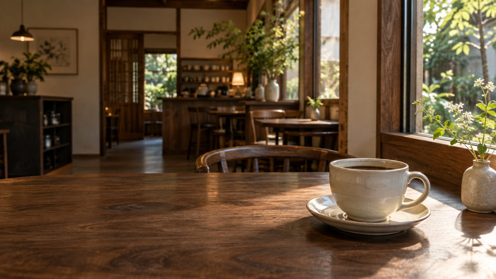
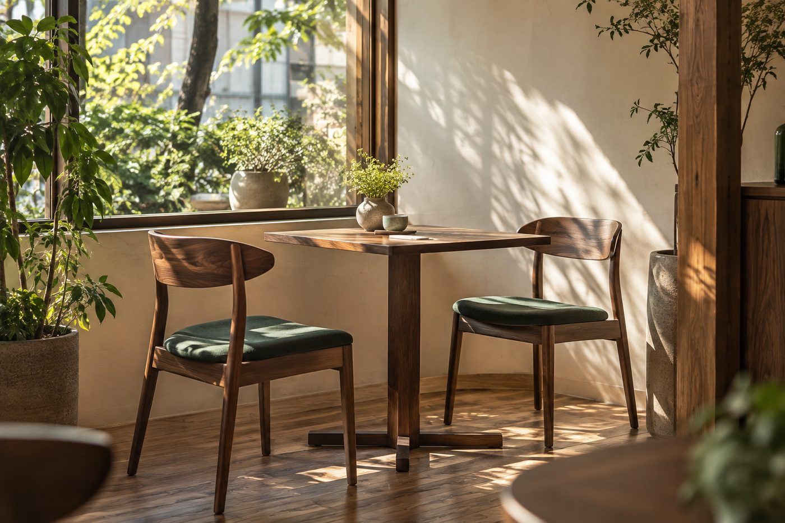

こもれびブレンド HOT / ICED
ほっとひと息つきたい時の、コーヒーを。
価格未定
MAKE YOURSELF AT HOME.
予定のない午後。
散歩の途中。誰かと話したくなった日。
扉を開ける理由は、なんでも。
お気に入りの一杯と、小さなおやつをそばに。
自分のペースに戻れる、そんな場所を。
このページは、カフェの雰囲気を伝えるための
架空のコンセプトです。
COFFEE, SOMETHING SWEET,
AND A SLOW AFTERNOON.

03 / THE SPACE
本をひらいたり、話に花を咲かせたり。
流れる時間まで、好きになれる場所へ。
お一人でも、誰かと一緒でも。
居心地のよさを、写真でお届けします。
店内写真はAI生成のイメージです。
実店舗の内装・設備を示すものではありません。
読みかけの本と、好きな飲みもの。
自分だけのひと休み。
おやつをはさんで、近況を。
話したかったことを少しずつ。
いつもの道を、少しだけ遠回り。
気分を変える一杯を。
オープンのご挨拶やお店への想いを、ここからお届けするイメージです。開業日や営業予定は、決まり次第掲載する想定です。このお知らせは架空の例です。
季節のメニューや営業日の変更をご案内できます。本制作では、ご自身でお知らせを追加できるように設定し、操作方法をご案内します。このデモはWordPress未接続です。
このページは架空のカフェのデモです。実際のサイトでは、確定したオープン日と営業予定をご案内します。
設備の内容は未定です。実店舗の情報を確認したうえで、駐車場の場所やお子様連れの方に必要な情報を掲載します。
このデモでは、予約やお問い合わせを受け付けていません。本制作では、お店の運用に合わせて電話などのご案内を掲載します。
07 / VISIT US
喫茶こもれび 架空のカフェ
実在のお店を案内するページではありません。
地図・電話・予約受付は接続していません。
ABOUT THIS DEMO
お店の魅力が伝わる見せ方をご確認いただくための、架空の提案用サイトです。
店名・文章・メニューは仮の内容、写真はAI生成です。
メニューの切り替えやお知らせの開閉をお試しいただけます。
本制作では、実際の写真と店舗情報に差し替えます。WordPress・地図・電話は未接続です。